BWL Knowledge Base Manager Plugins ” Documentation by “ Md Mahbub Alam Khan
BWL Knowledge Base Manager Plugins v1.0.8
Created: 10/06/2014
Last Edited: 20/06/2015
By: Md Mahbub Alam Khan
Email: hkhan.cse@gmail.com
Web Site: www.bluewindlab.net
Thank you for purchasing BWL Knowledge Base Manager Plugins.
If you like this plugin, feel free to rate it five stars at CodeCanyon downloads section.
If you encounter any problems please do not give a low rating but contact me first. So I can help you.
Thank You!
Table of Contents
- Quick Introduction
- Installation
- Add New Knowledge Base Items/Categories/Topics?
- How to use Short Code?
- Knowledge Base Widget
- Knowledge Base Filtering Option
- Knowledge Base Rating
- Knowledge Base Option Panel
- Translate Plugin
- Translate Plugin With WPML
- Upgrade Notes
- Change Log
- Credits
- Conclusion
A. Quick Introduction? - top
This plugin comes with lots of unique and flexible features to create unlimited number of Knowledge Base question and answers for your website content.
Sticky and shortcode base Ajax search options give your user best experiences to find there required asnwers.
It has an awesome shortcode editor that provide you all kinds of options to insert shortcode in tinymce editor.
Built-in widgets display latest/top up voted/top down voted/popular knowledge base in sidebar area.
Checkout our plugin outlook in WordPress site-
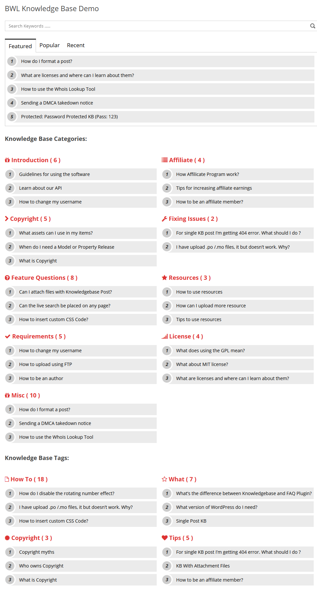
B. Installation: - top
- Steps:
- Go to plugins section in your wordpress admin panel and click Add New to install plugin.

- Now, upload the "bwl-kb-manager.zip" file.
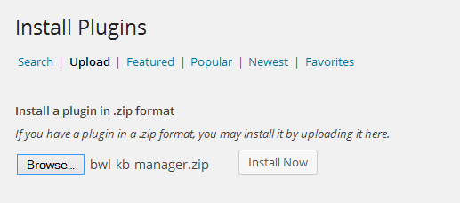 - Once plugin successfully uploaded in your server you will get an message to activate it. Click on "Activate Plugin" Link and plugin will be ready to use
- After activating plugins, you will redirect in plugins section of wp-admin panel and show new installed plugins information in there.
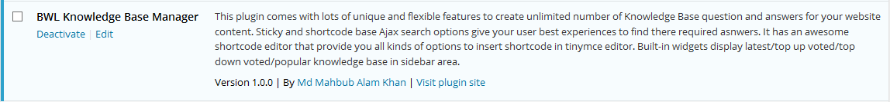 - Now you are ready to use BWL Knowledge Base Manager Plugin! In left sidebar menu you will see a new section like following image.
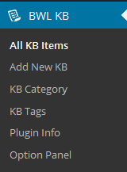
C. Add New Knowledge Base Items/Categories/Topics? - top
- Steps:
- Add new Knowledge Base items is almost similar like adding a new post. Go to "Knowledge Base" section
and click "Add New KB" link. After than, Add Knowledge Base title, description, select category, select tags and finally click publish to save new KB.

- Knowledge Base Category Page allows you to add unlimited number of categories for Knowledge Base. You can show category wise Knowledge Base by using shortcode.

- Knowledge Base Topics Page allows you to add unlimited number of Tags for Knowledge Base. You can show topic wise Knowledge Base by using shortcode.
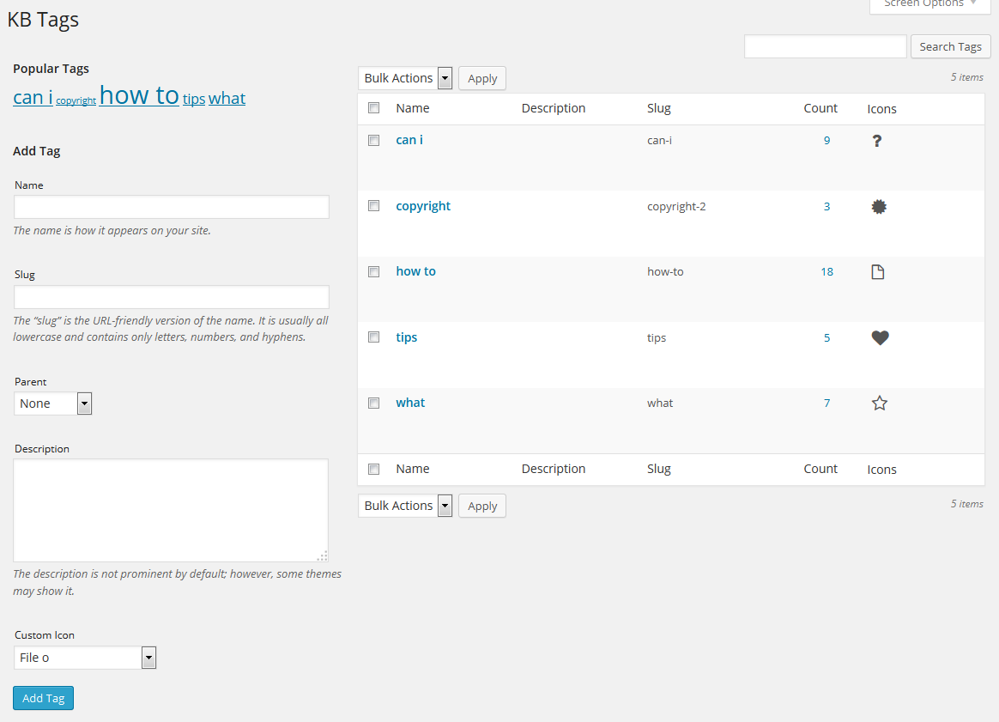
D. How to use Short Code? - top
- All Shortcodes Overview:
- You can easily integrate Knowledge Base items inside of any page or post using shortcode.
Go to any post/page and then click on
icon in TinyMce editor toolbar.
Click on that "Icon" and you will get a pop-up window like below-
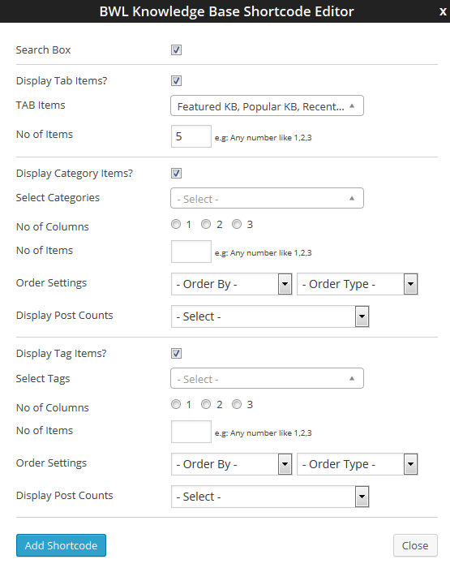
Select options according to your choice.
Add AJAX Search Bar:
Just click on the "Search" checkbox and then click "Add Shortcode" Button. Search box shortcode automatically added in your editor.
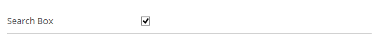
Display Tab Items:
You can also show your Knowledge Base items by categories. If you want to show Knowledge Base items by category check " Display Tab Items? " checkbox.
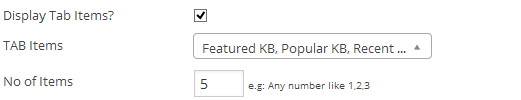
Display Category Items:
You can also show your Knowledge Base items by categories. If you want to show Knowledge Base items by category check " Display Category Items? " checkbox.
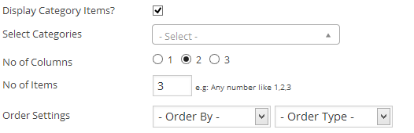
Display Tag Items:
You can also show your Knowledge Base items by Tags. If you want to show Knowledge Base items by category check "Display Tag Items? " checkbox.
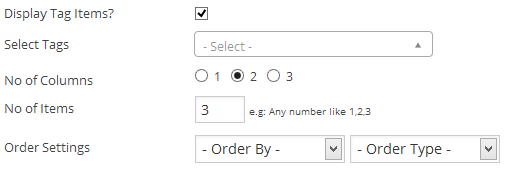
Available Shortcodes:
- Show AJAX Search Form:
[bkb_search /] - Show Tab Items:
[bkb_tabs][bkb_tab title="Featured"] [bwl_kb bkb_tabify="1" meta_key="bkb_featured_status" meta_value="1" orderby="meta_value_num" order="ASC" limit="5" ] [/bkb_tab][bkb_tab title="Popular"] [bwl_kb bkb_tabify="1" meta_key="bkbm_post_views" orderby="meta_value_num" order="DESC" limit="5" ] [/bkb_tab][bkb_tab title="Recent"] [bwl_kb bkb_tabify="1" orderby="ID" order="DESC" limit="5" ] [/bkb_tab][/bkb_tabs] - Show Knowledge Base By Category:
[bkb_category categories="introduction,resources,requirements,affiliate,copyright,license,misc"/] - Show Knowledge Base By Category in 1 column:
[bkb_category categories="introduction,resources,requirements,affiliate,copyright,license,misc" cols="1" /] - Show Knowledge Base By Category in 2 columns:
[bkb_category categories="introduction,resources,requirements,affiliate,copyright,license,misc" cols="2" /] - Show Knowledge Base By Category in 3 columns:
[bkb_category categories="introduction,resources,requirements,affiliate,copyright,license,misc" cols="3" /] - Show Knowledge Base By Tags:
[bkb_tags tags="how-to,what,copyright-2,tips"/] - Show Knowledge Base By Tags in 1 column:
[bkb_tags tags="how-to,what,copyright-2,tips" cols="1" /] - Show Knowledge Base By Tags in 2 column:
[bkb_tags tags="how-to,what,copyright-2,tips" cols="2" /] - Show Knowledge Base By Tags in 3 column:
[bkb_tags tags="how-to,what,copyright-2,tips" cols="3" /] - Show 5 Knowledge Base From Each Category (SET LIMIT):
[bkb_category limit='5'] - Show 5 Knowledge Base From Each Tags (SET LIMIT):
[bkb_category limit='5'] - Show Ask Question Modal link:
[bkb_ask_form] - Show Knowledge Base Ask A Question Form:
[bkb_ques_form inline=1 /]
- Show AJAX Search Form:
E. Knowledge Base Widget Option? - top
You can easily show Knowledge Base items in sidebar by using Widget option. Go to Appearance >> Widgets.
You will find a 3 widget boxs titled by BKBM Widget, BKBM Categories Widget, BKBM Tags Widget.
Drag and drop it in your right side available widget container.
Remember, your theme must support widget option for using this feature.
This widget contain features to display top up voted/ top down voted/ top viewed KB/ featured KB in widget area. Easy select drop down box provide you
super flexibility to choose your display type quickly.
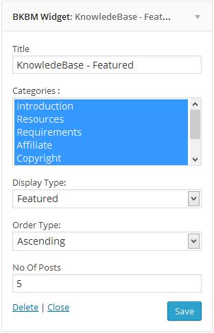
Display Type Options
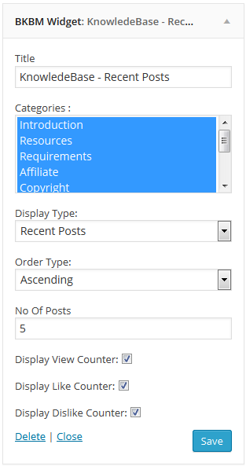
Order Type Options
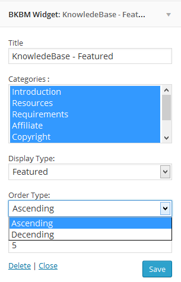
You can display list of Knowledge Base categories using this widget. You can also display no of items available in each category.
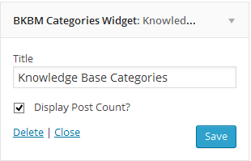
BKBM Tags Widget:
You can display list of Knowledge Base Tags using this widget. You can also display no of items available in each Tags.
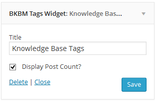BKBM Related Knowledgebase Posts Widget:
If you want to display related knowledgebase posts in sidebar area, then you can easily do that by using this widget.
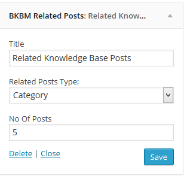
After setup all things successfully you can view Knowledge Base items in your website sidebar.
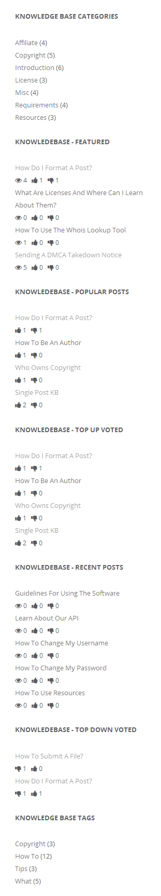
F. Knowledge Base Filtering Option? - top
You can Filter Knowledge Base questions based on date/category/tags/like/dislike/views.
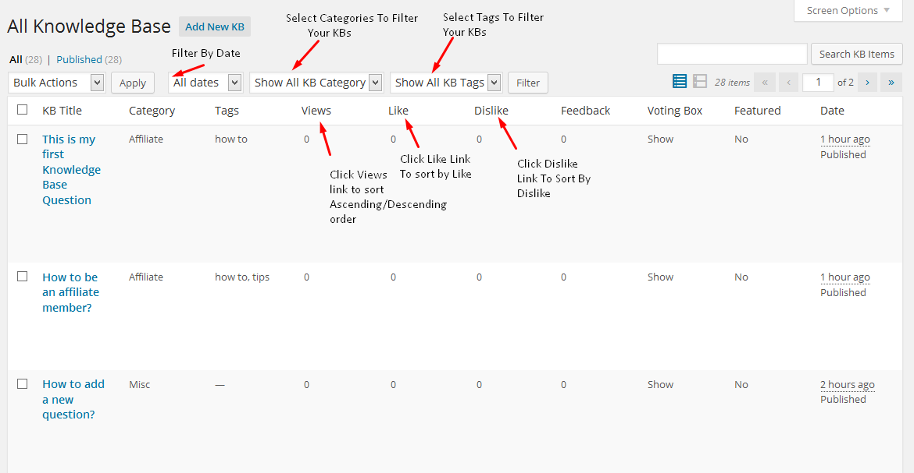
G. Knowledge Base Voting Option? - top
User can vote up/ vote down your Knowledge Base items and you can view them from Admin panel. Website view -
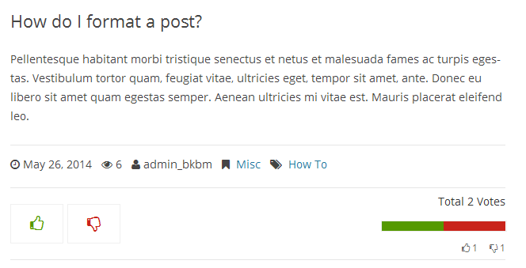
Admin Panel view -
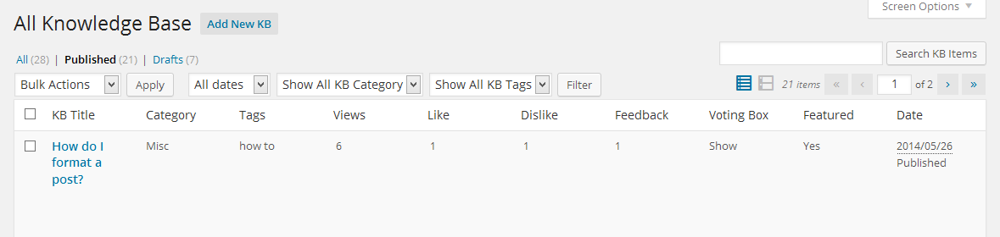
Reset KB Voting/Like/Dislike From Admin Panel -
This feature is useful, if you add some vote/like/dislike for test purpose and then reset vote/like/dislike counter in to it's initial position.
It's very simple to do. Just follow 2 steps
described in below -
- Go to Knowledge Base > All KB Items.
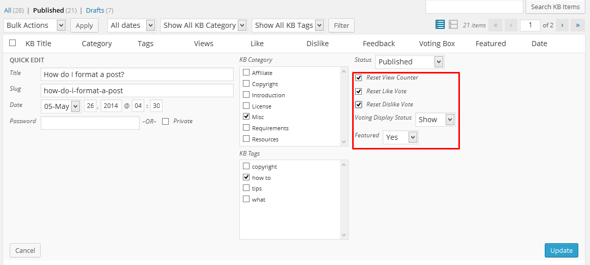 -
Select "Yes" from drop down/Check like/dislike reset checkbox, If you want to reset counter and then click update button.
H. Knowledge Base Option Panel? - top
General Options -
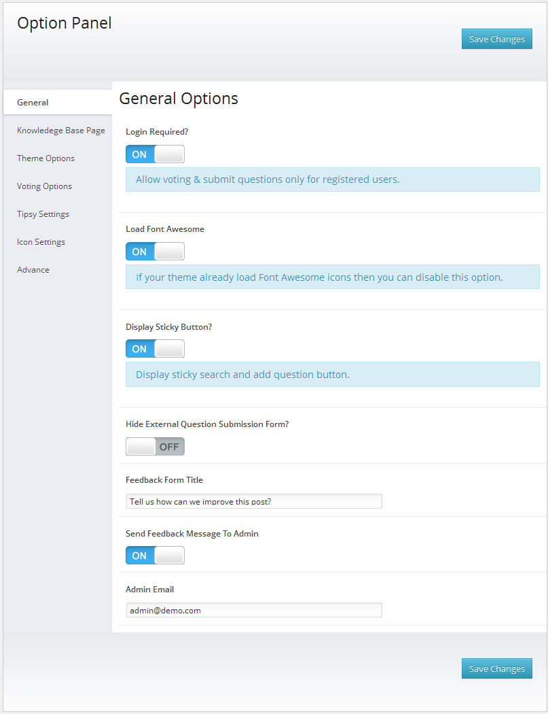
Knowledge Base Page Settings -
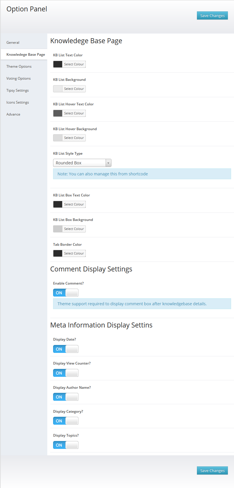
Knowledge Base Theme Page Settings -
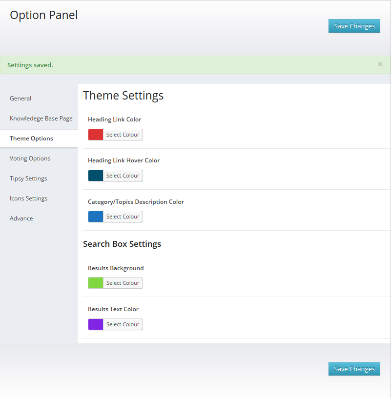
Voting Settings -
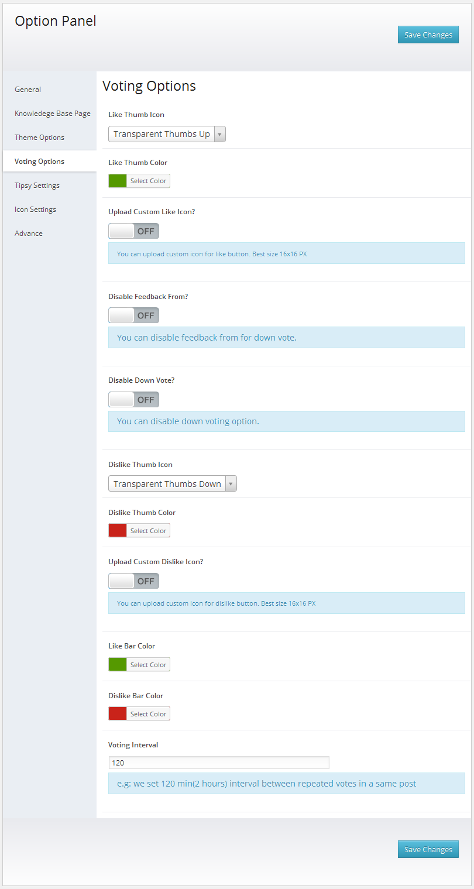
Tooltip Settings -
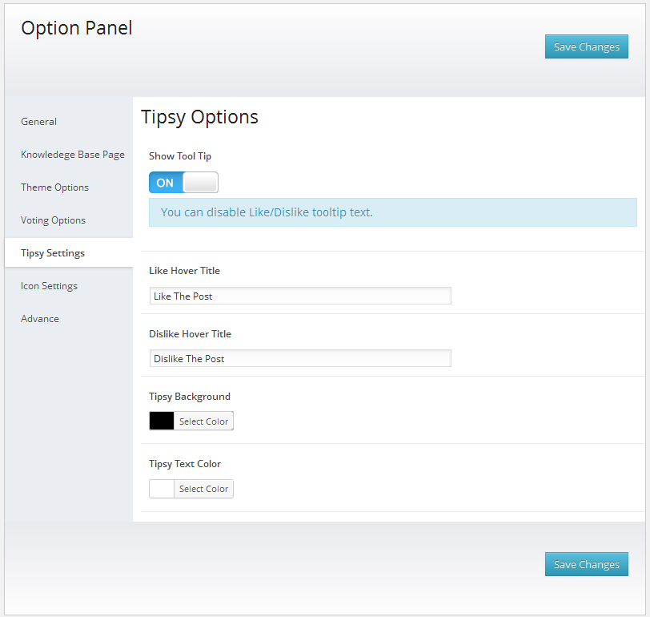
Icon Settings -
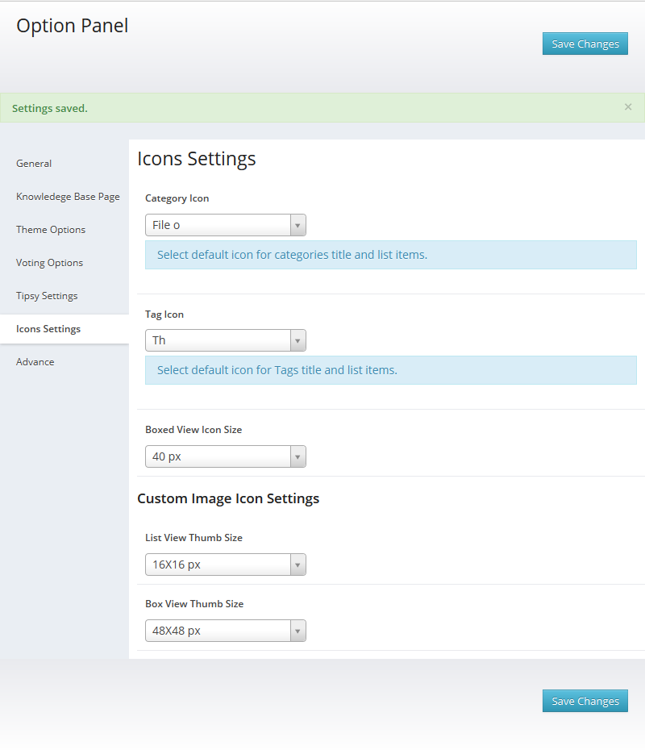
Advance Settings -
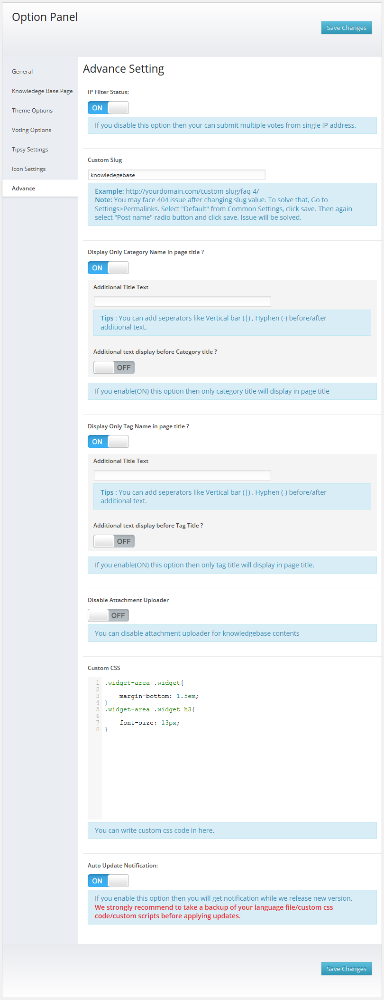
I. Translate Plugin. - top
"BWL Knowledge Base Manager" offers cool translation feature. So, you can easily add this plugin any kind of website. Check following steps for translate "BWL Knowledge Base Manager" plugin.
- Inside of plugin "lang" folder you will get a file named "en_EN.po" file. To edit this file you need to install "poedit" software in your computer.
- Our Plugin text-domain is 'bwl-kb'
- If you are doing "localization of a plugin" for the first time, then I recommend you to check this video. http://www.youtube.com/watch?v=aGN-hbMCPMg
- Suppose you want to translate plugin in to "German" language.
So,".po" file name will be "bwl-kb-de_DE.po". That's all. - For country code check - http://www.gnu.org/savannah-checkouts/gnu/gettext/manual/html_node/Country-Codes.html#Country-Codes
- For Language code check - http://www.gnu.org/savannah-checkouts/gnu/gettext/manual/html_node/Usual-Language-Codes.html#Usual-Language-Codes
J. Translate Plugin With WPML. - top
"BWL Knowledge Base Manager" also offers translation feature with WPML plugin. To get started, you will need WPML and add-on Plugins i.e. the core WPML Multilingual CMS which is always required and the String translations add-on.
Guide for installing & activating WPML is available on the WPML getting started guide.
A demo of BWL Knowledge Base Manager running under WPML
Default english : http://theme-testing.wpml.org/plugin-bwlknowledgebasemanager/knowledgebase/
Spanish : http://theme-testing.wpml.org/plugin-bwlknowledgebasemanager/es/knowledgebase/
After having installed WPML, if the projects in BWL Knowledge Base Manager were created before installing WPML, the dynamic strings aren't registered.
The first thing to do is load the page holding your Knowledge Base Page in the front-end. This allows any dynamic strings not registered to be registered automatically.
Next go in WPML "Theme and plugins localization" page and You will find all your plugins listed here.
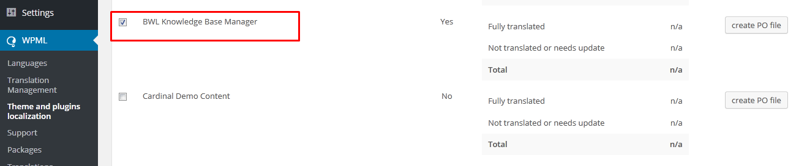
Check BWL Knowledge Base Manager and click Scan the selected plugins for strings WPML will look for all static translatable strings and add them to WPML for translation.
You are now ready for translations.
Load the "String Translations" page. You will have this once you install the String Translations add-on for WPML. Select either the dynamic list of strings it found in BWL Knowledge Base Manager during the scan or the static ones.
The differences are denoted by "Name" field. Dynamic strings have a name field while the static ones don’t.

There, that was easy, wasn’t it? Happy coding!
K. Upgrade Notes - top
2015, June, 22 - v 1.0.8
- Replace all files and folder of "bwl-kb-manager".
2015, May, 13 - v 1.0.7
- Replace all files and folder of "bwl-kb-manager".
2015, May, 04 - v 1.0.6
- Replace all files and folder of "bwl-kb-manager".
2015, February, 19 - v 1.0.5
- Replace all files and folder of "bwl-kb-manager".
2015, February, 04 - v 1.0.4
- Replace all files and folder of "bwl-kb-manager".
2014, December, 08 - v 1.0.3
- Replace all files and folder of "bwl-kb-manager".
2014, November, 13 - v 1.0.2
- Replace all files and folder of "bwl-kb-manager".
2014, June, 11 - v 1.0.1
- Replace all files and folder of "bwl-kb-manager".
2014, June, 10 - v 1.0.0
- Initial release
L. Change Log - top
2015, June, 22 - v 1.0.8
- Added Clear button (X) for more user friendly search experience in mobile device.
- Added feature to display attachment file name instead of file#1,file#2.
- Submit Question issue fixed.
- Shortcode Section Improved.
- Improved Language File.
- Improved Documentation.
2015, May, 13 - v 1.0.7
- RTL Feature added.
- Improved Language File.
- Improved Documentation.
2015, May, 04 - v 1.0.6
- Update Font Awesome latest version.
- Implement feature to add custom icon/image for categories/tags/posts.
- Improved shortcode editor interface.
- Improved option panel.
- Fixed update notification error.
- Fixed WPML Search issue.
- Fixed WPML config file.
- Improved Language File.
- Improved Documentation.
2015, February, 19 - v 1.0.5
- Improved Live Search Feature.
- Improved Plugin Performance.
- Fixed update notification error.
- Improved Language File.
- Improved Documentation.
2015, February, 04 - v 1.0.4
- Front end search feature improved.
- Added email field in "Ask A Question" Form.
- Added feature to notify user when their submitted question will publish or update.
- Added custom font setup feature for categories and tags.
-Improved shortcode editor.
-Improved Widget.
-Improved Option Panel.
- Language File Improved.
- Documentation Improved.
2014, December, 08 - v 1.0.3
-Added knowledgebase author selection feature.
-Added single page meta info show/hide feature in option panel.
-Added IP filtering feature for knowledgebase view counter.
-Added custom shortcode for "Ask a question" modal window. Check documentation "shortcode" section for details.
-Added comment enable/disable feature in option panel.
-Fixed CSS issue for sticky buttons.
-Fixed custom column filter bug and added wp_reset_query() function.
-Improved new version release notification feature.
-Improved shortcode editor. Hide category/topic from dropdown list, if no item assigned in a category/topic.
-Improve Translation file.
-Improve Documentation.
2014, November, 13 - v 1.0.2
- Display related knowledge base posts in widget area.
- Language File Improved.
- Documentation Improved.
2014, June, 19 - v 1.0.1
- Can attach unlimited files with each Knowledge Base Question.
- Improved option panel(Add feature for category page custom title)
- Improved CSS Code.
- Added Automatic Update Notification Feature.
- Add disable down voting option.
- Add disable feedback voting option.
- Add disable external question submission option.
- Bulk & Quick edit bug fixed .
- Add optional update settings.
- Language File Improved.
- Documentation Improved.
2014, June, 10 - v 1.0.0
- Initial release
M. Credits - top
- Ideas By BlueWindLab
- Color Picker By http://www.eyecon.ro/colorpicker
N. Conclusion: - top
Once again, thank you so much for purchasing BWL Knowledge Base Manager Plugins.
Md. Mahbub Alam Khan